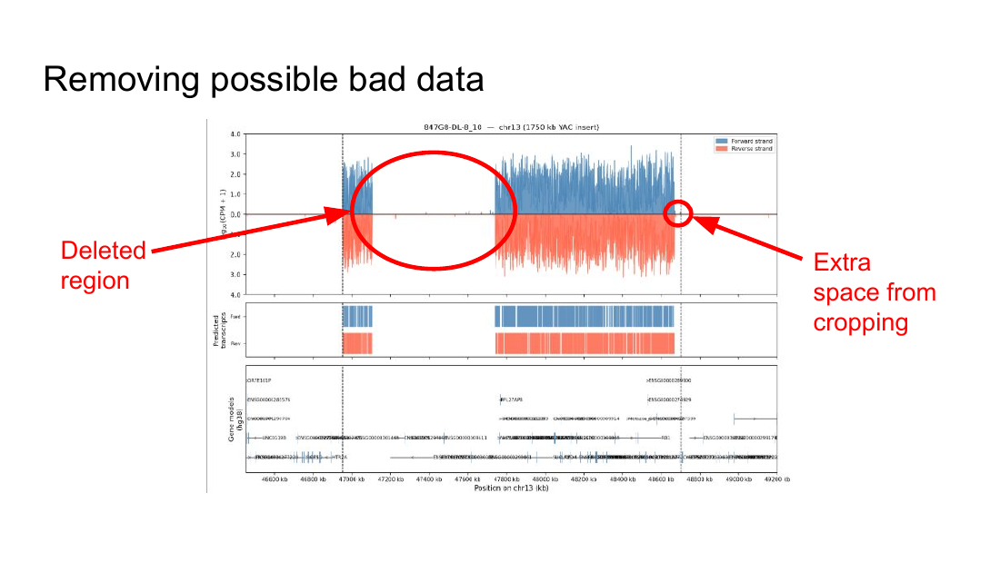

SnakeSeq
A Snakemake pipeline that turns raw RNA-seq off yeast artificial chromosomes into training-ready data, with the quality of every sample on the record.

Training is worthless without good data.
Work at the de Boer Lab with Abdul Muntakim Rafi and Sean Windle.
Why
We train sequence-to-expression models. I give the model a stretch of DNA and ask it to predict how strongly the genes in it get expressed. Ours learns from yeast artificial chromosomes, foreign DNA stuck into yeast so it behaves like a seventeenth chromosome. It's naive DNA, meaning it was never under evolutionary selection pressure in yeast, which is exactly what makes it useful for teaching a model what sequence alone implies.
Getting from a sequencing run to something a model can learn from is a long chain of steps, and when I got there we were doing it with bash scripts. One sample at a time, monitored by hand, dependencies installed from scratch, settings tracked in somebody's head. If I wanted to look at the data I had to write another script.
The worse problem was that the quality of our data was invisible to us. If we train on a bad sample we find out way later, and by then we can't easily tell which sample it was. Transparency in training data isn't a nice-to-have here. It's the only reason I'd trust the model afterwards.
Snakemake
My first instinct was to write a better bash script. That fails for a specific reason.
An RNA-seq run is a dependency graph, not a sequence. Each sample goes through the same chain of steps, some depend on others, some are independent, and any of them can fall over halfway.
A script encodes that graph implicitly, in whatever order I happened to write the lines. Which means the script can't tell me what still needs doing. When step four died on sample 40 of 73, I either reran everything or worked out by hand what had survived.
Snakemake makes the graph explicit. I declare what each rule produces and what it needs, and it figures out the rest. What can run in parallel, what's already done, what has to be redone because an input changed. That one property is what made everything else possible.
Structure
Snakefile the top level graph
workflow/ the rules themselves
config/ per run settings, nothing hardcoded
profiles/slurm/ how jobs get handed to the cluster scheduler
check.py quality thresholds and flagging
setup.sh one command environment bootstrap
rerun_sample.sh redo a single sample without touching the rest
requirements.txt pinned dependenciesThree decisions in there are doing most of the work.
I kept the SLURM profile separate from the rules. The workflow doesn't know it's on a cluster. Snakemake reads the profile and submits each job to the scheduler with the right resources, which is why 73 samples run at once instead of one after another, and why the same pipeline still runs on my laptop when I'm debugging.
Configuration is data, not code. Sample lists, paths and thresholds live in config/, so a new batch is a config change instead of an edit to the pipeline. The pipeline I ran last month is the same pipeline I run today, which is the only way the outputs stay comparable.
I wrote rerun_sample.sh because reruns are the normal case, not the exception. In practice I was always redoing one sample that failed, or one where I'd changed a parameter. Making that a one liner instead of a careful manual exercise is what stops people quietly working around the pipeline.
Pipeline
One command runs the whole thing on the cluster, in parallel, over any number of samples. Setting it up is setup.sh and a config file instead of a dependency hunt.
Every run records its own metadata so each sample carries its provenance with it:
- Name, source chromosome, location and length
- The FASTQ sources it came from
- Alignment results, including percent mapped to the YAC, to yeast, and unmapped
- Where it ranks against human chromosome mappings
Bad data flags itself, but the pipeline doesn't act on it. check.py compares each statistic against a threshold and sticks a flag on that sample's metadata. Warning means proceed with caution. Error means take it out of the dataset.
I made that split on purpose. A pipeline that silently drops samples is a pipeline quietly deciding what our model learns from, and we'd find out months later when a result looked weird. So SnakeSeq flags and records, and one of us fetches the flags and decides. Judgement stays with a person, bookkeeping doesn't.
It also catches things a summary statistic never would. Below is a coverage plot for one of our YACs, and I can see two problems at a glance that no single number reports: a deleted region in the middle of the insert where coverage drops to nothing, and a strip of extra space at the right hand end left over from cropping.

That's why I have it plot every sample instead of only the ones that trip a threshold. The numbers tell me which samples to distrust. The plots tell me why, and every so often tell me about a sample the numbers said was fine.
Results
We processed 73 YACs, dismissed 8, kept 65 for training. The eight went for length, unmapped rate, or mapping quality, and each one carries the number that disqualified it.
The 65 that survived hold up. FASTQ analysis showed high average quality, a normal distribution, uniform segment lengths, few Ns, and overrepresented sequences that turned out to be adapters rather than anything biological. PCA showed negligible batch effects and only six mild outliers, blending in well against the references. Gene expression correlates with reference yeast at Spearman r = 0.863, with most genes sitting near the identity line, which says the YACs produce broadly similar expression profiles to normal yeast.
That last check is the one I cared about most. It's our evidence that this data is worth training on at all.
RNA-seq performed by Alisha and Danielle.